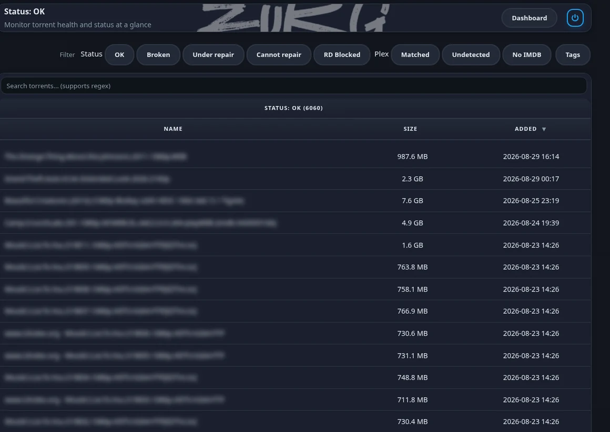
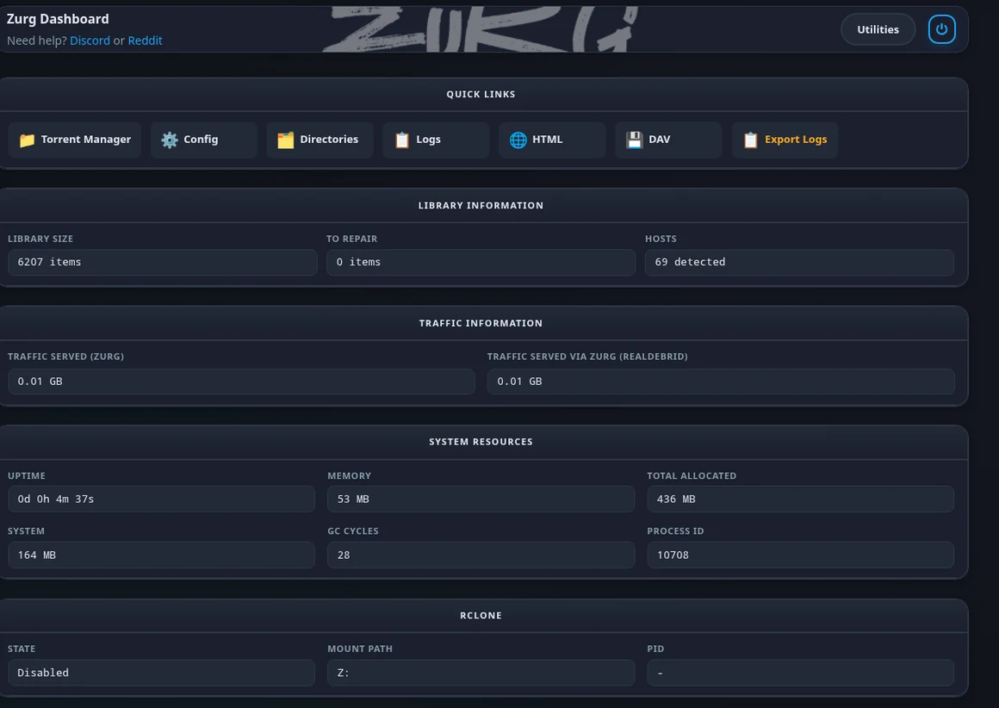
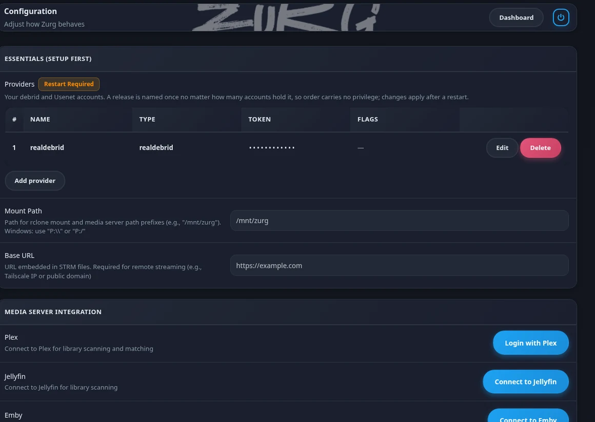

No symlinks! · No unpacking · Nightly builds for sponsors
Debrid and
Usenet.
As one folder.
One folder on your machine that Plex and Jellyfin and Emby read like a normal drive. Nothing downloads and nothing fills up your disk.
Usenet plays like the rest of the library. Nothing downloads and nothing unpacks and zurg rebuilds a missing article from the parity files while you are still watching.
We put five servers on one box and only zurg repaired the damage →A new build lands every day. $4 buys one month of updates and it is not a subscription. It also keeps Debrid Media Manager free for everyone who uses it. There is also a free public version of zurg that works with Real-Debrid on its own.
Measured on 2026-08-30 against four other servers on one small two core box. Absolute speeds depend on your machine and your connection so every figure here is a comparison against the next best of the four. The harness and the raw results are public. Read the benchmark
01 / What it does
One folder.
Every account.
Two accounts. One library.
The same film on two services shows up once and not twice. If one account is busy or rate limited zurg quietly reads from the other so playback carries on.
Add as many accounts as you own. There is no main one and the order does not matter. Two more cost 5 MB of memory.
It plays the awkward stuff.
Releases packed into RAR or 7z play without unpacking anything first. Posts that arrive with scrambled filenames get their real names back. Missing pieces are rebuilt on the fly instead of being skipped.
It fixes itself.
Real-Debrid links go stale over time even while the download still looks fine. zurg finds the dead ones and swaps them out before you hit a file that will not play.
Services that build a fresh link every time are left alone. There is nothing there to go stale.
02 / The dashboard
Everything it knows.
On one page.
Real screenshots from a live library of 6207 releases. Release names are blurred on purpose. Nothing else is touched up.



03 / Head to head
We put five servers on one box.
Then we published the harness.
Measured on 2026-08-30 on a small two core server. One news account and one server running at a time so nothing was ever oversubscribed. Every one was built from its own main branch that day. We are not naming them here. The benchmark names all five and hands you the scripts to run it yourself.
Reading speed
256 MB cold reads. Six runs each on rotating offsets so nothing was ever served warm.
| zurg | 2nd | 3rd | 4th | 5th | |
|---|---|---|---|---|---|
| Average MB/s | 48.42 | 36.65 | 25.58 | 18.51 | 12.94 |
| Slowest to fastest | 43.3-52.0 | 34.0-39.4 | 24.0-27.1 | 17.7-19.0 | 8.7-16.3 |
| Wait before data arrives | 0.85 s | 1.50 s | 2.89 s | 3.61 s | 3.81 s |
| Reads that finished | 6 of 6 | 6 of 6 | 6 of 6 | 6 of 6 | 2 of 6 |
How it feels
The last two rows run through the real Plex web player and not a synthetic read.
| zurg | 2nd | 3rd | 4th | 5th | |
|---|---|---|---|---|---|
| Cold open | 0.301 s | 1.328 s | 1.722 s | 3.496 s | 5.299 s |
| Jumping to a new spot | 0.396 s | 0.493 s | 0.604 s | 2.302 s | 2.499 s |
| Press play in Plex | 3.43 s | 4.37 s | 5.49 s | 5.52 s | 5.83 s |
| Next episode in Plex | 4.19 s | 5.26 s | 5.57 s | 5.92 s | 5.94 s |
The other four are ranked inside each row so a column is not one product. Nobody came second on everything.
Living with it
Not speed. What you actually have to run and look after once it is up.
| zurg | The other four | |
|---|---|---|
| Brings up the mount itself | yes | two of them do |
| Signs in to Plex | yes | none of them |
| Backs up your Plex database | yes | none of them |
| Tidies dead items out of Plex | yes | none of them |
The two that do not bring up a mount need a second program running beside them. The Plex rows are the ones with no equivalent anywhere else. zurg reads the library and keeps snapshots of the database so a bad scan is something you can undo.
Only one of them repaired the damage.
One article of 1669 was gone from the news server. Four of the five never got it back. Two served silence forever and one served no bytes at all and one refused the whole file. Reading again eight minutes later changed nothing.
zurg rebuilt the missing span from the parity files while it was still serving reads.
The damaged article results →One dropped healthy content twice.
It imported nine episodes of a ten episode season and warned nobody. On another release its own health page blamed a missing article. We checked all 1010 articles in that post one at a time and every one was there.
zurg imported both and served both.
One could not finish a long read.
It promises the full length and then closes the connection partway through. Four of six reads never delivered the bytes they said they would. The first read after a restart is the one at risk.
zurg finished all six.
One handed back an empty folder.
Some downloads arrive with scrambled filenames. This one never imported the release at all so there was nothing to open.
zurg reads the real names out of the file itself and hands you the episode.
One renamed your files.
The episode arrived under the name of the download rather than its own name. Plex is then left guessing what it is.
zurg keeps the original name so Plex matches it first time.
One works well and stopped.
It handles a lot of what zurg handles. Its last commit was 27 May 2026 and nobody maintains it now. It also leaves repair files cluttering up your folders.
Nothing here is broken. It is just standing still.
One will not play packed releases.
It keeps no library and gives you no folder. Its own notes say packed releases will not play. It sat this round out because the build it ships is on no public branch.
zurg plays both and keeps your library.
Coming from something else
Every guide is built around one promise. Plex does not start over. Nothing gets deleted. Your watched history and play counts and collections and artwork all survive the move.
04 / Speed
How fast it
actually is.
The top two tables are one four provider run on 2026-08-30 from a command that ships with zurg. The pair under them is older detail on a 7.31 GB film. None of it is a race against other tools. Read the baseline
Each account on its own
Reading 256 MB straight through from one account at a time. Three runs each on 2026-08-30.
| Real-Debrid | AllDebrid | TorBox | Usenet | |
|---|---|---|---|---|
| Average speed in MiB/s | 68.9 | 37.2 | 68.3 | 43.6 |
| Slowest to fastest | 63-72 | 33-41 | 67-70 | 42-47 |
| Wait before data arrives | 36 ms | 158 ms | 227 ms | not measured |
All four were measured in one run on one box so these columns can be read against each other. The wait row is the round trip to the service to hand back a link. Usenet never makes that call because zurg builds the link itself so there is no figure to report. That is not a zero wait. The real opening times for Usenet are in the panel below.
Press play
Each one measured on a freshly started zurg on 2026-08-19.
| Real-Debrid | AllDebrid | TorBox | |
|---|---|---|---|
| Opening a file | 1.294 s | 0.476 s | 0.565 s |
| Before playback starts | 0.158 s | 0.203 s | 0.208 s |
| Jumping to a new spot | 0.343 s | 0.259 s | 0.356 s |
| Reading video details | 1.98 s | 1.34 s | 0.99 s |
| Memory used | 75 MB | 30 MB | 50 MB |
On Usenet
The shapes the run above does not cover. From the five way benchmark on 2026-08-30.
| Usenet | |
|---|---|
| Opening a file | 0.301 s |
| Before playback starts | 0.350 s |
| Jumping to a new spot | 0.396 s |
| Reading video details | 1.33 s |
| Memory used | 437 MB |
A different run on a different day so this does not line up beside the three columns to the left. Usenet holds more in memory because it rebuilds damage and reads inside archives.
05 / Honest limits
The things it will not do.
None of this is a surprise once you meet it. Better to read it here than find out halfway through a Friday night. Every line comes from the same write ups as the rest of the page.
A broken release stays broken.
zurg rebuilds what the parity files can cover. Past that you get an empty folder rather than an error. There is nothing left to serve.
It finds out by trying.
zurg does not test a release before you press play. A bad one turns up when you open it rather than being quietly skipped in advance.
It does not pick releases for you.
There is no search and no ranking and no scoring inside zurg. Sonarr and Radarr do that part or you do it by hand.
There is no Stremio addon.
zurg gives you a folder and a library and leaves playing things to your media server. If Stremio is how you watch then this is not a drop in for it.
The first build takes a while.
The first build is slow on purpose. zurg holds itself to a polite request rate which works out at about half a second per torrent on Real-Debrid. After the first pass it keeps up on its own.
Where that number comes from →One box and one provider.
Everything was measured on a single two core server against one news account. A bigger machine or a different backbone will move these numbers. Comparing them to a run from another day is not valid either.
These are our own numbers.
zurg is built by the same person who ran the benchmark. That is a good reason not to take any of it on trust. Speed also depends on your machine and your connection so our numbers are not your numbers. zurg ships the same measurement as a command.
Maybe not for you.
If you want one binary and nothing around it then stay where you are. A working setup is zurg and rclone and a media server. Infuse is the one exception because it reads the WebDAV straight off and skips rclone.
06 / Access
Two builds.
Both of them real.
Most of what is on this page is in the nightly and a fresh one lands every day. $4 buys one month of it and you are not signing up for anything longer. The free build is not a demo. It does the whole Real-Debrid job and it always will.
What the $4 is for
Debrid Media Manager is free. Sponsoring zurg is what pays for it.
Nobody is charged a cent to use Debrid Media Manager and nobody is going to be. The servers under it still get paid for every month and the bill does not care that the site is free.
zurg comes from the same desk. One developer building and hosting both of them in whatever free time is left over. The $4 is what keeps the hosting paid and the development going and the nightly build is how it comes back to you.
buys one month of updates and keeps Debrid Media Manager free for everyone else. It is not a subscription and there is no minimum term. One payment is one month and nothing renews on its own.
The same $4 covers the nightly builds of zurg and the full zurg source code and the sponsors only features on Debrid Media Manager.
Whatever you pull inside your month stays yours to keep running after the month is over. Pay again whenever you want another month of updates.
Start at gatekeeper. It is where you link the GitHub account that receives the invite to the private repository and where you pick GitHub Sponsors or Patreon. Both of those switch your access on by themselves.
Paying by PayPal is a one off and it is added by hand. Copy your Sponsorship ID from gatekeeper and send it to @yowmamasita on Discord.
One Real-Debrid account on the older settings format. The other three backends and merging several accounts live in the nightly.
07 / Quick start
Up and running.
Prepare the mount point on your host once. Then start the container. zurg writes its own settings and comes up on port 9999 where you finish setting up in the dashboard.